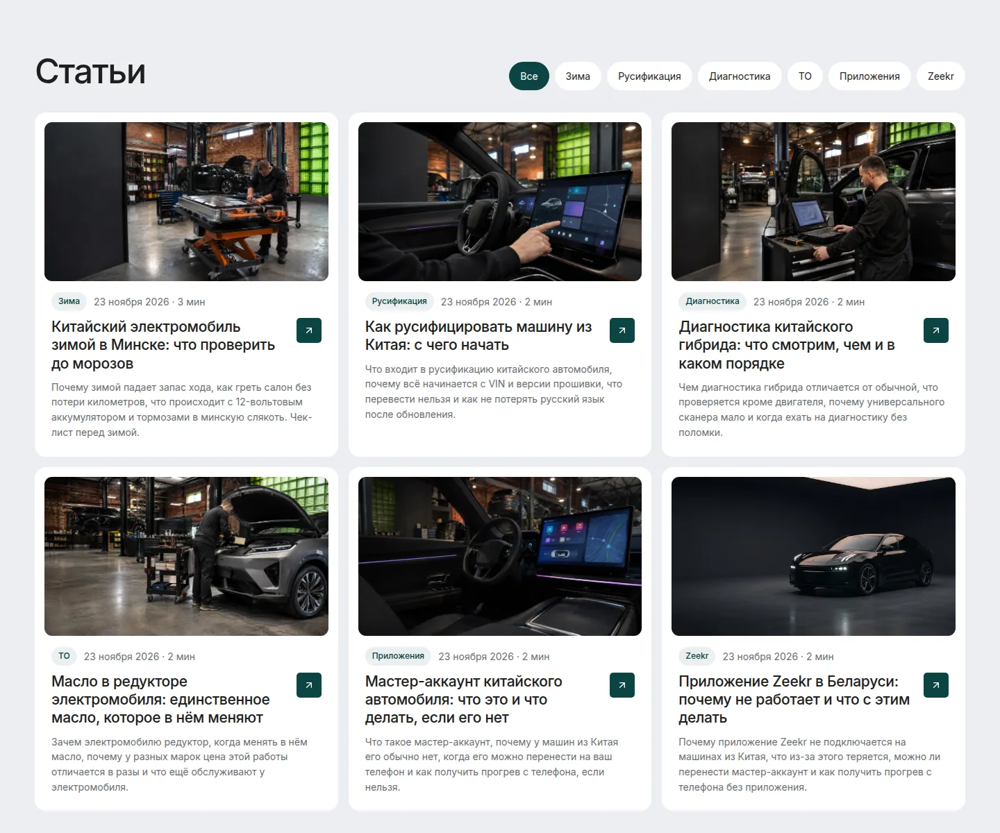
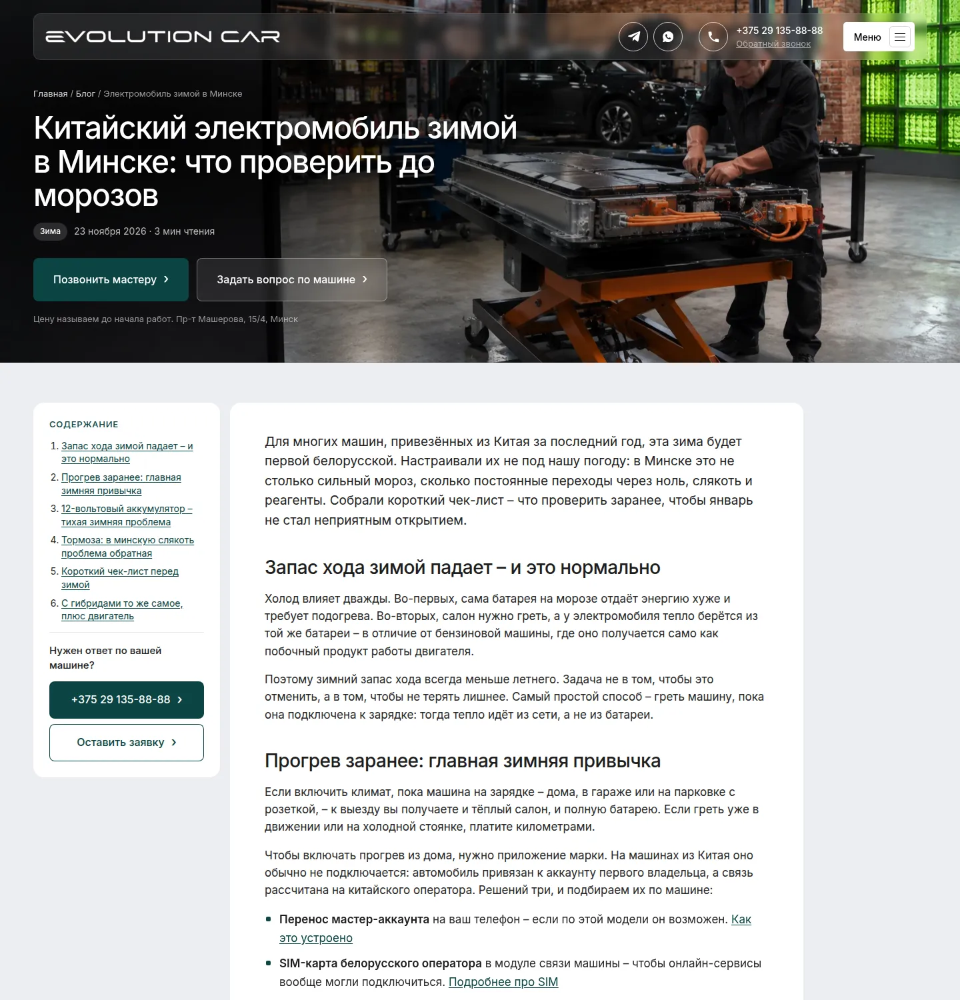

Отчёты · Evolution Car Service · 23 ноября 2026
Блог: список статей и 6 статей под Минск
Страница блога собрана заново: карточки статей с фильтром по темам и форма вопроса мастеру. Шесть статей взяты с блога Новосибирска и переписаны под Минск. Управление статьями в админку не добавлялось.
Что переписано под Минск
- Адрес, телефон и формы Минска. Новосибирский адрес и имя основателя убраны.
- Цены Новосибирска убраны: как на всём сайте, «назовём до начала работ».
- Зима: минская слякоть, оттепели и реагенты вместо сибирских морозов.
- Приложения: Беларусь вместо России, SIM-карта белорусского оператора, перенос мастер-аккаунта и Pandora – это услуги, которые есть на сайте Минска.
- Из каждой статьи ссылки на услуги по теме, 5 частых вопросов (2 колонки), «Читайте также», форма заявки.
Список статей

Страница статьи

Как добавлять новые статьи
Пока без админки: новую статью добавляю я по вашему тексту или теме. Достаточно прислать тему или готовый текст и, если есть, фото.